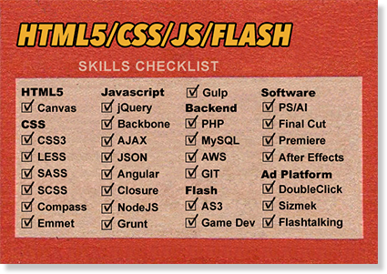

An interactive developer and technical lead with over 10 years of advertising agency experience. I began my digital career as a designer and quickly found my calling as a developer. My passion is building rich experiences that not only press the latest technologies but also are clean, functional and user friendly.
If you are looking for a developer that understands technology, has a background in design and video, and can execute ideas that sizzle, we should talk.
It is important to spend at least 20 precent of my time learning new technologies as well as taking on on challenging projects where I learn new skills. My background in development began as a Flash developer and now I have transitioned those skills into HTML5/JS/CSS.
Here is a brief checklist of my current and growing skill set.
Click the cards below to view the work samples.